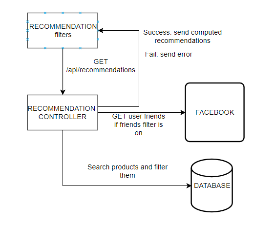

Development
No project has ever been created without any kind of planning. As such, we too went through a planning process
to
create the Gore app.
The project is built, like any other, on the communication between client and server. But, limitations can
appear if we do not include other modules, such as the local storage with the client, and the database and
external apis with the server, as shows in the picture below.
The arhitecture
The general view
As we couldn't know from the beginning how our app will work, not perfectly at least, it was needed a general view on what the use can do. As such, we created a number of AML schemas to display our v`iew on the user possibilities and the general arhitecture of the api needed for such app.

The particular view
Of course, a general view can not show our intentions with the app to a third party, or to ourselves in case we need to step back someday and remind ourselves what we wanted to do with Gore and to keep it simpe. As such, a particular view on each possibility of the user was needed, this "particular view" being each use case. The use cases in our ... case were the login, the product addition to the favorites list, the bar code scan and the receival of recommandations.
Now, this schema is a bit too general to be called a particular view on the workings of the page, but it is needed to see what is needed for each action of the user. For a more particular view, the next picture shows it best.

The packages
Nothing works just because we want it to, as such there is a need for classes and methods to make the app work as desired. For ease of understanding, we separated the packages in 3 categories: Data package (for the back end part of the app), user interact package (as the name says, the packages with which the user interacts), and the external communication package (because our api doesn't have all the information needed, requiring login from facebook and information of products from an external api), and a persister package (to keep the data from disappearing after a refresh).
We use npm to fetch and manage libraries
{
"name": "gore-api",
"version": "1.0.1",
"description": "GORE REST API",
"main": "dist",
"scripts": {
"dev": "nodemon -w src --exec \"babel-node src --presets es2015,stage-0\"",
"start": "node dist",
"product_image_worker": "babel-node src/workers/fetch_image.js --presets es2015,stage-0"
},
"eslintConfig": {
"extends": "eslint:recommended",
"parserOptions": {
"ecmaVersion": 7,
"sourceType": "module"
},
"env": {
"node": true
},
"rules": {
"no-console": 0,
"no-unused-vars": 1
}
},
"author": "GORE",
"license": "MIT",
"dependencies": {
"babel-preset-env": "^1.7.0",
"babel-register": "^6.26.0",
"body-parser": "^1.18.3",
"buffer": "^5.1.0",
"compression": "^1.7.2",
"cors": "^2.8.4",
"crypton": "^1.0.8",
"dotenv": "^4.0.0",
"express": "^4.16.3",
"express-validation": "^1.0.2",
"express-validator": "^4.3.0",
"form-data": "^2.3.2",
"helmet": "^3.12.1",
"http-status": "^1.1.2",
"idempotent-babel-polyfill": "^6.26.0-1",
"joi": "^13.3.0",
"jsonwebtoken": "^8.3.0",
"lodash": "^4.17.10",
"moment": "^2.22.2",
"moment-timezone": "^0.5.17",
"mongoose": "^5.2.15",
"morgan": "^1.8.0",
"passport": "^0.4.0",
"random-string": "^0.2.0",
"redis": "^2.8.0",
"redis-server": "^1.2.0",
"reqclient": "^2.4.0",
"request": "^2.87.0",
"html-metadata": "^1.7.0"
},
"devDependencies": {
"babel-cli": "^6.9.0",
"babel-core": "^6.26.3",
"babel-loader": "^7.1.4",
"babel-polyfill": "^6.26.0",
"babel-preset-es2015": "^6.24.1",
"babel-preset-stage-0": "^6.24.1",
"nodemon": "^1.17.5",
"standard": "^10.0.3"
}
}

The server
Or api, respects the restful principles , i.e it exposes the information required by the client at a call, each call having a different URI. The server knows what information it must returns from the headers sent together with the call itself.

The database
While the api interprets the calls form the client, the information it gets doesnt come from nowhere, but from a specific database. The database will hold information referring to each user, from username and password(after being crypted), to the user's preferences.

The preview
Being the first page that the user use, this page gives a short explanation on what it can do, both in a paragraph and in a row with boxes.
The scan
We separated the scanning from the recommandations list to ease the add and removal of favorite products for the user, making it a list of its own.
The barcode scan is made by using the dynamosoft library https://demo.dynamsoft.com/dbr_wasm/js/dbr-6.4.1.1.min.js
export function initScanner () {
var reader = null
var iptEl = document.getElementById('uploadImage')
dynamsoft.dbrEnv.resourcesPath = 'https://demo.dynamsoft.com/dbr_wasm/js'
dynamsoft.dbrEnv.licenseKey = 't0085VwAAADl5Os0WbqzWF5NBQCF2QIalXxPOM3uDCVlYKlLOJStKaBrtMt8LXvEeBmtapLBXk557e1R3IAIqZx4x7wRGaE1chbMnFiVHLmZREfAHpl4WZw=='
dynamsoft.dbrEnv.onAutoLoadWasmSuccess = function () {
reader = new dynamsoft.BarcodeReader()
}
iptEl.addEventListener('change', function () {
reader.decodeFileInMemory(this.files[0]).then(function (results) {
if (results && results.length) {
fetchProduct(results[0].BarcodeText)
} else {
alert('Code was not recognised')
}
}).catch(ex => {
alert('error:' + (ex.message || ex))
})
this.value = ''
})
}
Then, the code is being sent to the api, in order to find our product informations
Examples:
GET /api/product/53232690265
Response:
{status_verbose: "procuct found", product: { "categories_prev_hierarchy":[ "en:fresh-foods", "en:meals", "en:sandwiches", "en:fresh-meals", "fr:croque-monsieur" ], "entry_dates_tags":[ "2016-09-29", "2016-09", "2016" ], "serving_quantity":150, "_id":"3222475893421", "pnns_groups_2":"Sandwich", "pnns_groups_2_tags":[ "sandwich" ], "languages_tags":[ "en:french", "en:1" ], "brands_debug_tags":[ ], "image_front_url":"https://static.openfoodfacts.org/images/products/322/247/589/3421/front_fr.10.400.jpg", "stores":"Casino", "origins":"", "product_name_fr_debug_tags":[ ], "generic_name_fr":"Pain de mie garni de fromage fondu et de jambon cuit choix", "additives_old_n":11, "nutrition_data_per_debug_tags":[ ], "expiration_date_debug_tags":[ ], ....mult mai multe }}
or
{error: "Product not found"}

The recommandations
Giving filters for the user to use, the page will show recommended items based on said filter and the already preferred products of the user.
The favourite ids are stored inside a cookie, so the api can access them anytime. If the user wants to use friends recommendations, the facebook api is being used to get friends ids, then the ids are being sent to the api as well If the user is logged in, his favourites will be saved inside the database
export function getFriends (cb) {
FB.api(`/me/friends?access_token=${getCookie('goreToken')}`, function (response) {
cb(response)
}, {scope: 'user_friends'})
}
Examples:
GET /api/recommendations?minQuantity=0&maxQuantity=5000&friends=true&country=all&packages=all&nutrition=all&fat=all&salt=all&sugar=all&sfat=all&friends_ids[0]=1022489257958041&friends_ids[1]=107502510381434
Response:
[{id: 133, code:53232690265, name:"Coca Cola"}]
or
{error: "No recommandations found"}

The login
To ease the friend based products filter, to help the user filter and see the goods prefered by
your friends, a
facebook login was implemented.
The facebook api is being used to login, then the access token and user info are stored inside cookies.
export function facebookLogin () {
FB.init({
appId: '1958746447768376',
cookie: true,
xfbml: true,
version: 'v2.8'
})
FB.login(function (res) {
var d = new Date()
d.setTime(d.getTime() + 24 * 60 * 60 * 1000)
let expires = `expires=${d.toUTCString}`
document.cookie = `goreToken=${
res.authResponse.accessToken
};${expires};path=/`
FB.api('/me', res => {
document.cookie = `userId=${res.id};${expires};path=/`
document.cookie = `userName=${res.name};${expires};path=/`
onInit()
let nameInfo = document.querySelector('.user-nav .user-nav__name')
if (nameInfo) {
nameInfo.innerHTML = cookieName
}
})
}, {scope: 'public_profile,email,user_friends'})
}
The statistics
Gore app gives the user the possibility to see the statistics for the general userbase of the app, as the user himself and his friends.
The list of all favourite products are being interogated by the api in order to obtain several statistics. Then based on those statistics we generate a svg for each statistic category
export function fetchStatistics (container) {
showLoader()
fetch(`http://localhost:8080/api/statistics`, {
credentials: 'include'
}).then(response => response.json())
.then(data => {
let keys = Object.keys(data)
for (let i = 0; i < keys.length; i++) {
container.innerHTML += generateSVG(data[keys[i]], keys[i])
}
hideLoader()
}
)
.catch(function () {
hideLoader()
})
}
export function generateSVG (data, title) {
let total = 0
let keys = Object.keys(data)
for (let i = 0; i < keys.length; i++) {
total += data[keys[i]]
}
let svg = `<figure>
<figcaption>${title} statistics</figcaption>
<svg version="1.1" xmlns="http://www.w3.org/2000/svg" xmlns:xlink="http://www.w3.org/1999/xlink"
class="chart" width="1000" height="${keys.length * 25 }">`
for (let i = 0; i < keys.length; i++) {
svg += `<g class="bar">
<rect x="200" y="${i * 20}" width="${data[keys[i]] ? data[keys[i]] * 700 / total : 0}" height="19"></rect>
<text y="${i * 20 + 9.5}" dy=".35em">${keys[i]} : ${data[keys[i]]}</text>
</g>`
}
svg += `</svg>
</figure>`
return svg
}
Examples:
GET /api/statistics
Response:
[{name: "cocacola",value: "30%"}...]
or
{error: "Something went wrong"}